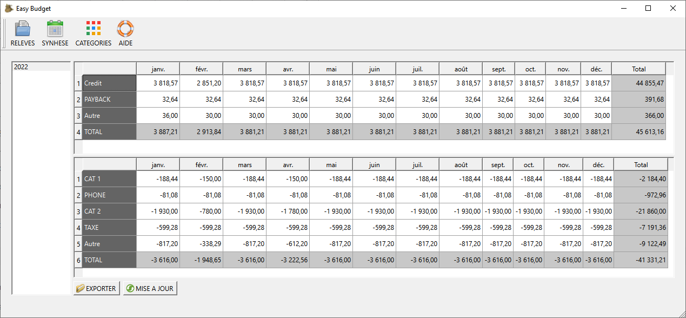

Vue Synthèse

La vue de synthèse est composée de 2 tableaux:
- Le tableau supérieure est la synthèse des entrées
- le tableau inférieure est la liste des dépenses
Les tableaux sont remplies automatiquement par le bouton "Mise à Jour"
Chaque ligne correspond à une catégorie, définie dans la Vue des Catégories.
Les catégories de type "Crédit ou Débit" se retrouvent dans les 2 tableaux, avec la somme des valeurs positives en haut et la somme des valeurs négatives en bas.
Mise à jour
Le bouton de "Mise à Jour" permet de mettre à jour les tableaux pour l'année sélectionnée
La mise à jour est nécessaire pour initialiser les tableaux ou lorsque des informations ont été modifiées dans les vues Catégories ou Relevées.
Exporter la synthèse
Le bouton "Exporter" permet d'enregistrer les tableaux dans un fichier "CSV", afin d'être utiliser par d'autres applications.
© 2022 Michel Janton
The documentation provided herein is licensed under the terms of the GNU Free Documentation License version 1.3 as published by the Free Software Foundation.